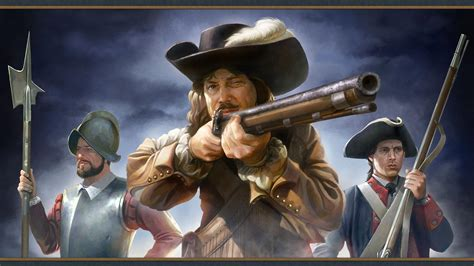
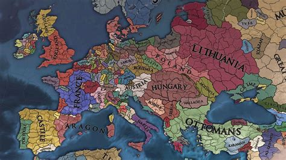

Kto to jest Paradox Interactive?
Paradox Interactive AB to szwedzki wydawca gier wideo z siedzibą w Sztokholmie. Paradox jest najlepiej znany z wydawania gier strategicznych osadzonych w historycznych realiach, zwłaszcza gier z gatunku grand strategy, i wydał gry strategiczne w różnych ustawieniach, a także gry innych gatunków takich jak gry fabularne i symulatory zarządzania. Zazwyczaj kontynuują rozwijanie swoich gier po pierwotnym wydaniu, tworząc dodatki do pobrania, i są również znani z tworzenia gier, które łatwo można modyfikować.
Strategie Paradox, w które grałem (posortowane według daty rozpoczęcia gry)
Crusader Kings 3
-


Crusader Kings III to grand strategy z elementami gry fabularnej osadzonej w średniowieczu. Gra rozpoczyna się w 867 roku i zazwyczaj kończy w XV wieku, ta gra naprawdę dobrze ukazuje świat średniowieczny, pokazując, jak funkcjonował feudalizm i dyplomacja. Ta gra różni się od innych gier Paradox grand strategy, ponieważ nie kontrolujesz kraju, ale postać, władającego tytułami takimi jak imperia, królestwa, księstwa czy baronie. Jest to jedna z najbardziej chaotycznych gier na liście ze względu na losowe działania postaci niezależnych, ale to tylko czyni tę grę bardziej grywalną.
Europa Universalis 4
-
 

Europa Universalis IV to gra strategiczna, w której gracze mogą kontrolować naród od późnego średniowiecza do wczesnej nowożytności, zajmując się handlem, administracją, dyplomacją, kolonizacją i wojnami. Gra jest podzielona na 4 epoki: Epoka Odkryć, Epoka Reformacji, Epoka Absolutyzmu i Epoka Rewolucji. Każda epoka ma swoje własne mechaniki i wydarzenia (jak dziedziczenie burgundzkie w Epoce Odkryć). Gra ta jest trudna dla nowych graczy, ale, w przeciwieństwie do niektórych innych gier na tej liście, wszystkie główne działania w tej grze są kompleksowe i interesujące.
Ranking
| Niesamowite | Europa Universalis IV |
|
|---|---|---|
| Dobra | Crusader Kings III |
Hearth of Iron IV |
| Ok | Victoria 3 |
Stellaris |
| Zła | Brak |
|
Podsumowanie
Wszystkie gry są bardzo różne pod względem rozgrywki i wymagają pewnej cierpliwości od gracza. Jeśli lubisz gry o spokojnym tempie, gdzie możesz zatrzymać się na chwilę i przemyśleć, zdecydowanie polecam te gry.